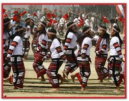

Exploring India's Culture and Heritage
Classical Dance Forms of India
Cheraw is a traditional and iconic folk dance of the Mizo people from the state of Mizoram, located in northeast India. Often referred to as the "bamboo dance", it is one of the most popular and visually captivating dances of the region. Performed during major festivals like Chapchar Kut, Cheraw is known for its precision, rhythm, and the unique use of bamboo sticks, which set it apart from other folk dances in India.
Cheraw is a traditional and iconic folk dance of the Mizo people from the state of Mizoram, located in northeast India. Often referred to as the "bamboo dance", it is one of the most popular and visually captivating dances of the region. Performed during major festivals like Chapchar Kut, Cheraw is known for its precision, rhythm, and the unique use of bamboo sticks, which set it apart from other folk dances in India.
The history of Cheraw dates back several centuries and is believed to be one of the oldest dances of the Mizos. Originally, it had ritualistic purposes, including funeral rites and agricultural ceremonies, especially to seek blessings for a good harvest or to honor the dead. Over time, the dance transitioned into a festive and social performance, maintaining its core traditional structure while becoming a key element of Mizo identity and pride. With its stunning coordination and cultural richness, Cheraw has gained national recognition and is often performed at cultural festivals across India.
The distinguishing feature of Cheraw dance is the use of long bamboo poles, which are held horizontally and clapped together in rhythm by a group of men sitting on the ground. The female dancers step gracefully between the moving poles with perfect timing, showcasing remarkable agility, balance, and coordination. The dance requires intense concentration and skill, as mistimed steps can lead to injury. The rhythmic clapping of bamboo sticks creates a lively beat, accompanied by drums, gongs, and sometimes flute music. Dancers wear bright traditional Mizo attire, adding to the vibrant visual appeal.
Cheraw is more than just a dance—it is a cultural ritual deeply rooted in Mizo traditions. It is often performed to mark joyful events, especially during harvest and spring festivals. In the past, it was also performed to bless the soul of a deceased mother who died in childbirth, though that ritualistic purpose has evolved over time. Today, the dance symbolizes community spirit, celebration, and harmony with nature.